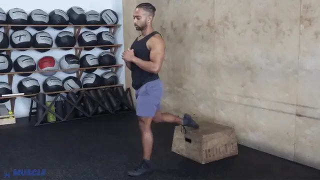
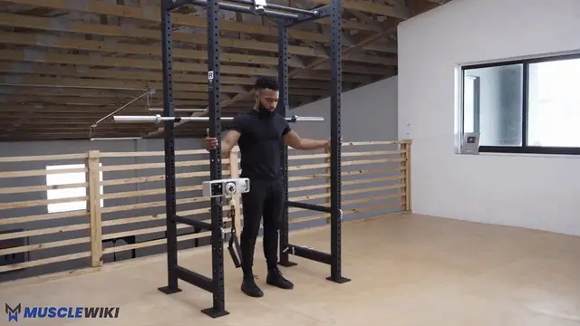
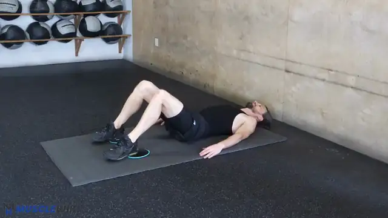
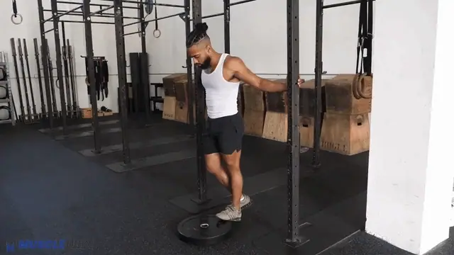
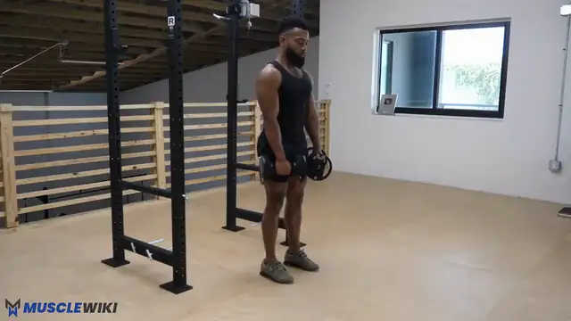
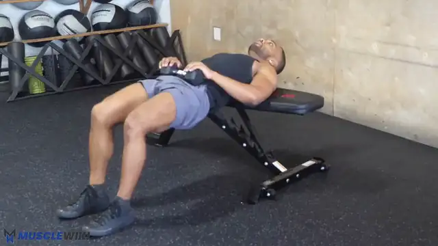
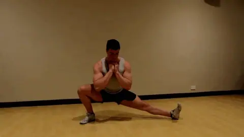

-

1 Bulgarian Split Squats
3×10-12 per side
Quads + Glutes (unilateral compound)
Feel: Front-leg quad and glute burning; stretch in the rear hip flexor.
How to
- Rear foot on a chair/couch (laces down), front foot ~60 cm ahead
- Lower until the front thigh is ~parallel, drive through the front heel, torso upright
- Most of the weight on the front leg; if the rear knee complains, move the front foot further forward
Notes
Groin note: if the inner-thigh area flares, swap to bilateral squats (goblet or bodyweight) for higher reps until it settles.
-

2 Sissy Squats
3×8-10
Quads — Isolation (stretch-focused)
Feel: Intense stretch/burn in the front of the thigh, especially above the knee.
How to
- Hold the TS900/doorframe for balance, knees travel forward as you lean back, heels can lift
- Lower until you feel a deep quad stretch, push back up through the quads
Notes
Why it works for you: it's the bodyweight "leg extension" — loads the rectus femoris in the stretched position. 6–10 hard reps is plenty.
-

3 Sliding Leg Curls
3×8-12
Hamstrings — Knee Flexion
Feel: Back of the thighs loading hard, especially as the legs extend out.
How to
- Lie on your back, heels on towels / sliders / socks on a smooth floor
- Lift hips into a bridge and hold them up the whole set
- Slide both heels out away from you (legs straighten), then curl them back under you — that's one rep
- Keep hips up; the slower you slide out, the harder it is
Notes
Why this replaced Nordics: it trains the same eccentric knee-flexion pattern Nordics do — the actual hamstring-strength job — but needs no ankle anchor, so no more wedging under the treadmill or padding your shins. Difficulty self-regulates with tempo. Progress toward single-leg slides. (Banded lying leg curls are a fine backup if your floor isn't slippery.)
-

4 Single-Leg Calf Raises (off a step)
3×12-15
Calves — Gastrocnemius
Feel: Calf burning; full stretch at the bottom, full squeeze at the top.
How to
- One foot on the edge of a step, hold the TS900 for balance
- Lower the heel below the step (full stretch), push to full contraction
- 2s up, 2s down — no bouncing. The bottom stretch is where the growth is.
-

1 B-stance Romanian Deadlift
3×10-12 per side
Hamstrings + Glutes — Hip Hinge
Feel: Deep stretch + drive through the working glute/hamstring. Minimal balancing.
How to
- Stagger your stance: working leg flat, other foot back on its toes as a kickstand (~60–80% of the weight on the front leg)
- Hinge at the hips — push the butt back, slight knee bend, lower the torso toward parallel
- Squeeze the glute to stand; don't round the lower back
- Hold a dumbbell (or one in each hand) for load
Notes
Why this replaced single-leg RDL: the kickstand removes almost all the balance demand, so the hamstrings/glutes become the limiter instead of your wobble — which fixes the "I only feel the stretch, not the muscle, and 3 reps takes forever" problem. You can also actually load it.
-

2 Hip Thrust / Glute Bridge
3×12-15
Glutes — Hip Extension
Feel: Glutes contracting hard at the top.
How to
- Hip thrust: upper back on the couch/bench, feet flat, drive hips up until torso is parallel to the floor, squeeze 1s at the top, lower slowly. Hold a dumbbell on the hips for load.
- Glute bridge (floor version): same drive, shoulders on the floor — easier setup.
Notes
Why added: direct glute work the old plan was light on — and the glute strength here is exactly what helps the anterior-pelvic-tilt side of your postural work (the dead bug handles the front, the glutes handle the back).
-

3 Cossack Squats
2×8-10 per side
Adductors + Hip Mobility (frontal plane)
Feel: Deep stretch in the inner thigh of the straight leg.
How to
- Wide stance, shift to one side squatting deep on that leg, other leg straight with toes up
- Chest up, don't round forward, alternate sides
Notes
Groin note: this loads the adductors in a stretched position, so it's the most likely to aggravate the right groin. Reduce depth or skip it for now if it bites — come back to it once the physio has weighed in.
-
4 Single-Leg Calf Raises
3×12-15
Calves — Gastrocnemius
Feel: Calf burning; full stretch at the bottom, full squeeze at the top.
How to
- One foot on the edge of a step, hold the TS900 for balance
- Lower the heel below the step (full stretch), push to full contraction
- 2s up, 2s down — no bouncing. The bottom stretch is where the growth is.
Notes
Same as Legs 1 — see above. Calves get trained both days (you like them and they respond to frequency).
About leg workout
Two short leg sessions per week. Legs 1 is quad-focused, Legs 2 is posterior-chain + glutes. Single-leg calf raises appear both days (anchor — your favourite, and calves respond well to frequency). Two swaps from the old plan based on your feedback: Nordic curls → sliding leg curls (no more wedging your ankles under the treadmill) and single-leg RDL → B-stance RDL (kills the balancing problem so you actually feel the muscle).
Time Breakdown
Legs 1
| # | Exercise | Sets × Reps | Rest | Time |
|---|---|---|---|---|
| 1 | Bulgarian split squats | 3×10-12/side | 90s | ~7 min |
| 2 | Sissy squats | 3×8-10 | 60s | ~4 min |
| 3 | Sliding leg curls | 3×8-12 | 90s | ~4.5 min |
| 4 | Single-leg calf raises | 3×12-15 | 45s | ~4 min |
| — | Total | ~20 min |
Legs 2
| # | Exercise | Sets × Reps | Rest | Time |
|---|---|---|---|---|
| 1 | B-stance RDL | 3×10-12/side | 90s | ~6.5 min |
| 2 | Hip thrust / glute bridge | 3×12-15 | 60s | ~4.5 min |
| 3 | Cossack squats | 2×8-10/side | 60s | ~4 min |
| 4 | Single-leg calf raises | 3×12-15 | 45s | ~4 min |
| — | Total (+ optional glute-med set) | ~19 min |
Progression Roadmap
| Exercise | Now | Next | Later |
|---|---|---|---|
| Bulgarian split squats | Bodyweight | 2s pause at bottom | Weighted (backpack / dumbbells) |
| Sissy squats | Assisted (hold TS900) | Freestanding | Weighted (hold a dumbbell) |
| Sliding leg curls | Both legs | Slower eccentric / fewer assists | Single-leg slides |
| B-stance RDL | 3 kg dumbbells | Heavier dumbbells | Single-leg RDL again |
| Hip thrust | Bodyweight / 3 kg dumbbell | Heavier dumbbell on hips | Barbell-style (loaded) |
| Cossack squats | 2×8-10 (pain-free) | Deeper ROM | Weighted |
| Calf raises | Bodyweight, 2s tempo | 3s eccentric | Weighted (hold a dumbbell) |
Quick Reference
Quads (compound) → Bulgarian split squats → weighted
Quads (isolation) → Sissy squats → freestanding → weighted
Hamstrings (curl) → Sliding leg curls → single-leg
Hamstrings (hinge) → B-stance RDL → heavier / dumbbell
Glutes → Hip thrust + B-stance RDL + Bulgarians
Adductors / mobility → Cossack squats (scale for groin)
Glute med → Side-lying raises + fire hydrants (finisher)
Calves → Single-leg calf raise (both days)
Garmin Connect Setup
Garmin Connect Setup
Synced to Garmin Connect with uv run garmin/sync.py push. Exercise names match the cards above; each one's Garmin exercise is in garmin/exercises.yaml, and the watch notes are built from the card's dose and cues.
Legs 1
| Step | Exercise | Target | Rest |
|---|---|---|---|
| Repeat ×3 | Bulgarian Split Squats | 10/side | 90s |
| Repeat ×3 | Sissy Squats | 8 | 60s |
| Repeat ×3 | Sliding Leg Curls | 8 | 90s |
| Repeat ×3 | Single-Leg Calf Raises (off a step) | 12/side | 45s |
Legs 2
| Step | Exercise | Target | Rest |
|---|---|---|---|
| Repeat ×3 | B-stance Romanian Deadlift | 10/side | 90s |
| Repeat ×3 | Hip Thrust / Glute Bridge | 12 | 60s |
| Repeat ×2 | Cossack Squats | 8/side | 60s |
| Repeat ×3 | Single-Leg Calf Raises | 12/side | 45s |